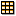
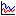
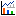
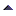

Data Views - Overview
Three forms of data views are used in Multicore System Analyzer in order to work with the collected / analyzed data.
-  Table View – Is used to visualize data in tabular format. Here are some usage examples:
- List data acquired from a target device component or any data provider
- Show counts derived from acquired data.
- Summarize statistics (counts, totals, averages, minimums, and maximums) derived for specific functions or devices.
-  Line Graph - Is used for x/y plotting and mainly for visualizing changes of one (or more variables of that same type) against time. Typical examples are:
- Load visualization
- Throughput visualization
- Graphical visualization of latency/duration data
-  DVT Graph – Is used for depicting state transitions, events and textual messages against time. It plots groups of related states/events/messages each forming a channel line with a common key value on the Y-axis against time. Different data values are mainly distinguished by assignment of different colors and tooltips on mouse over reveal their value. Below is an example of such a graph. Typical usage examples are:
- Execution Graph
- State Graph
Data Views are equipped with powerful features to help navigating, analyzing and finding points of interest. Features including:
Others:
- : Sort - Use sort on table columns and Y-Axis labels of DVTGraph
 : AutoFit - Use the Auto Fit Columns button to adjust table column widths so that all values are completely displayed.
: AutoFit - Use the Auto Fit Columns button to adjust table column widths so that all values are completely displayed. : Tree Mode - Use this toggel button on DVTGraph to switch between flat and tree mode on Y-Axis labels. The '.' character is used to breakdown flat nodes in a tree.
: Tree Mode - Use this toggel button on DVTGraph to switch between flat and tree mode on Y-Axis labels. The '.' character is used to breakdown flat nodes in a tree. : Refresh - Use refresh button on any date view to trigger refresh of the view.
: Refresh - Use refresh button on any date view to trigger refresh of the view.